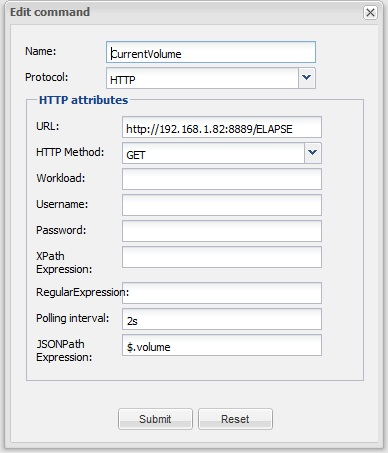
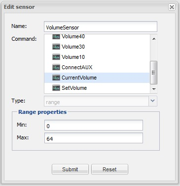
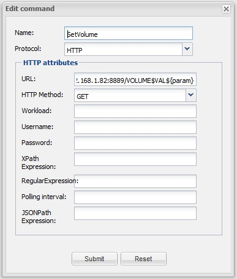
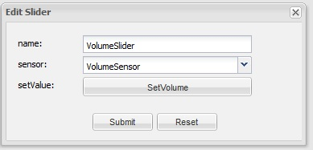
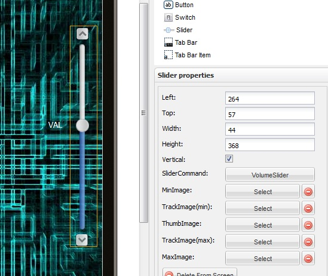
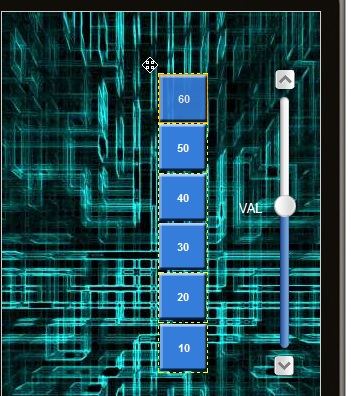

I have a pair of these Philips speakers which sound wonderful and even come with a suitable app for connecting to music on my network, internet radio and a raft of source types. The only thing it doesn't do is allow me to integrate with OpenRemote. As far as I understand I would need an API or a developers pack to achieve this which Philips don't do.
Is there another way of detecting what commands the speakers are responding to? For instance, I have iLearner for the iTach IP2IR - it would be great if I could run some other software that detect commands by listening on the relevant IP address.
I've emailed Philips on the subject but not expecting too much from them on the software side of things.
Thoughts?
{kind=link}
{kind=link}
{kind=link}
{kind=link}
{kind=link}
{kind=link}
{kind=link}
{kind=link}
{kind=link}
|
When the vendor doesn't give you the details there isn't much you can do but to attempt to reverse engineer their protocol. If you're not already familiar with it, Wireshark is a very popular tool to monitor network traffic. It takes a little learning to get started but there's plenty of resources and help available on the Internet, it being very widely used tool. |
|
Recieved polite reply from Philips.... Dear Mr Sperrin, I am sorry but we are unable to provide you with the information you asked for. It is patented trademark and we do not share it with our customers. Ultimately as we are constantly working towards improving our customer service experience, you may receive a short survey about your customer experience pertaining to my specific response. I would greatly appreciate your thoughts and feedback as I am always looking to improve the service that I provide to my customers. Kind regards, Philips Customer Care |
|
I gave Wireshark a try - crikey! I'll have to give it another go when I'm feeling brave. It seemed to attack my poor old desktop and the HD was struggling to cope. I'll think about putting it on my fast lappy but a little concerned about what Wirshark actually does. I get the impression I can filter by the IP of the speakers which should reduce the flood of data. I'm guessing streaming data to the speakers is a bad idea whilst monitoring!! |
|
Sadly, some companies never learn... |
|
This is more of a blog style update more than anything today - helps me remember where I'm at but any thoughts and ideas welcome. Wireshark is up and running on my laptop and capturing 100% of LAN traffic. The secret is going to be how to open a windows7 streaming ("play to") window without actually streaming music. When it is streaming an MP3 there are 80k packets per minute so wont stand a chance of filtering out any pause/play/vol+- commands. I'm hoping I can do something similar with a different app called Philips Media Manager where I dont have to stream any data. Meanwhile there are a couple of interesting comments on the Philips sound AWxxxx forum about IP commands and URL calls. |
|
I'm not getting anywhere with wireshark - facinating subject but think i'm out of my depth However the controls for Philips AW9000 speakers are encapsulated in their app called AirStudio and when I run this in IE I can view the source code. I'm thinking I could use the source code in my own set of OpenRemote commands - is this a path worth persuing? Here is an example for the code from the volume control page.... PS apologies for macro messages - something to do with '{' ??? ----------------------------------------------------------------------------------------------------------------------------------- <!DOCTYPE html PUBLIC '-//W3C//DTD XHTML 1.0 Transitional//EN' 'http://www.w3.org/TR/xhtml1/DTD/xhtml1-transitional.dtd'> Unknown macro: {
return;} e.preventDefault(); $(document).trigger('click').trigger('click'); });</script> <script type="text/javascript"> if(obj.command == 'HOME' ||obj.command == 'STOP' || obj.command == 'NOWPLAY') Unknown macro: {
clearInterval(t);
CalculateAmountOnClick();
window.location = '/nowplay';
} else if(obj.command == 'ELAPSE'){ if(obj.mute != playItem.muteStatus) { if(obj.mute == 0) Unknown macro: {
document.getElementById('id-img-mute').src = 'res/Btn_Mute.png';
playItem.muteStatus = 0;} else if(obj.mute == 1) Unknown macro: {
document.getElementById('id-img-mute').src = 'res/Btn_Mute_on.png';
playItem.muteStatus = 1;} } if(obj.volume != playItem.volume){ if(gVolumebarChanged) Unknown macro: {
gVolumebarChanged=0;} elseUnknown macro: {
playItem.volume = obj.volume;
changepos_X(obj.volume);} } } } } } http.send(); } function begin() Unknown macro: {
progressSelected = 1;
}
var myScroll; Unknown macro: {desktopCompatibility} );} if(!document.addEventListener) { document.attachEvent('touchmove,', function (e) Unknown macro: {e.preventDefault();} , false);document.attachEvent('DOMContentLoaded',function(){ setTimeout(function() Unknown macro: { loaded(); } ,100);},false);,100);},false); Unknown macro: { e.preventDefault(); } ,false);document.addEventListener('DOMContentLoaded',function(){ setTimeout(function() } function animatePG() { if(progressSelected == 0) { $('#progress_panel').animate( Unknown macro: {
marginTop} );} progressSelected = 0; } </script> <title>Play screen</title> <script type='text/javascript'> var playItem = Unknown macro: {
'defaultAlbum'} ; var previousPage = Unknown macro: {'url'} ;
function gotoDevice() Unknown macro: {clearInterval(t);
window.location = 'philips} function gotoHome() Unknown macro: {
gotoPage('/index');
}
function gotoNowPlaying(){} function gotoSettings() Unknown macro: {
gotoPage('/settings$01$01$01$0');
} function goback() Unknown macro: {
gotoPage(previousPage.url);
} function toggleMute(){if(playItem.muteStatus==1) Unknown macro: {
document.getElementById('id-img-mute').src = 'res/Btn_Mute.png';
playItem.muteStatus = 0;
submitPost('nowplay','/VOLUME$UNMUTE');
} else Unknown macro: {
document.getElementById('id-img-mute').src = 'res/Btn_Mute_on.png';
playItem.muteStatus = 1;
submitPost('nowplay','/VOLUME$MUTE');
} } function goHome() Unknown macro: {
gotoPage('/index');
} function CalculateAmountOnClick () {var curtain = document.body.appendChild( document.createElement('div') ); curtain.id = 'curtain'; curtain.style.height = window.outerHeight + 'px'; curtain.onkeypress = curtain.onclick = function() Unknown macro: { return false; } } function submitPost(url,val) Unknown macro: {
xmlhttp = new XMLHttpRequest();
} else Unknown macro: {
xmlhttp=new ActiveXObject("Microsoft.XMLHTTP");
} xmlhttp.onreadystatechange=function() { if (xmlhttp.readyState==4 && xmlhttp.status==200) { } function Right(str, n){ Unknown macro: {
var iLen = String(str).length;
return String(str).substring(iLen, iLen - n);
} }function gotoPage(url) Unknown macro: {
clearInterval(t);
CalculateAmountOnClick();
checkAndClearPrevRequest();
window.location = url;
} function checkAndClearPrevRequest(){ return; if(http.readyState != 4 && http.readyState != 0) Unknown macro: {
http.abort();
//sleep(500);
}
} float: Please specify which side the content will be floating on (left or right). #td_2 Unknown macro: {border-right} </style> </head><body> Unknown macro: {
var vol = Math.round((playItem.maxvolume * percentage)/100);
playItem.volume = vol;
gVolumebarChanged = 1;
submitPost('nowplay','/VOLUME$VAL$'+vol);
} function changepos_X(vol) Unknown macro: {
var perc = (vol*100)/playItem.maxvolume;
volSlider.changePos(perc);
}
</script> ---------------------------------------------------------------------------------------------------------------------------- |
|
Looking at the source code might indeed be the easiest way to find out the URLs used and their parameters. |
|
Hi Eric The home page for speakers is http://192.168.1.82:8889/index. Then using firefox dev tools it exposes subsequent context commands. So for instance:- http://192.168.1.82:8889/aux ; this connects speakers to auxillary and shows volume control ( where TV is plugged in) http://192.168.1.82:8889/settings$15$02$01$0 ; from volume control this shows equaliser (although cant do much in there) http://192.168.1.82:8889/VOLUME$VAL$35 ; this acts a bit differently and successfully changes the volume but just returns a command success message So the question is how to use these in OR. I'm guessing the AUX command is straightforward HTTP command? Volume: Can I build a slider that will generate the URLs for the volume? I see the slider requires a sensor but would rather it uses the min/max index to send the URL - is this possible? Feels like progress! |
|
Aux would be straightforward HTTP command that would do the "source switching" and you would just ignore the return value. For volume, not sure what the question is? You can use a slider and use ${param} instead of 35 in your example URL to use the slider value as the volume value. Not sure what you mean with min/max index ? |
|
The following returns volume info:- http://192.168.1.82:8889/ELAPSE and returns the result:- {'command':'ELAPSE', how would I capture the volume value for the sensor? It looks like JSon but havent figured the syntax. Currently have tried using JSONPath Expressions:- $.Volume and getting:- INFO 2014-02-08 18:27:03,024 (HTTP): received message: {'command':'ELAPSE', (Also, by min/max i meant was there a way i could set a min and max value for the slider control and use the sensor position to set the volume. but as you point out its important to use a sensor to read the volume as well as set it.) |
|
Had a fresh look this morning - must be case sensitive? I used $.volume - sorted Also here are HTTP commands and sensors figured (so far) for Philips AWxxxx range of Fidelio Wireless Speakers:- Commands Volume Bass Treble Balance Connect to Auxillary http://192.168.1.82:8889/aux Radio Mode:- Play Radio Presets (1 to 5) Play Radio Faves (1 to n) NB Favourites is better because Presets is limited to 5 Standby/Wake For example to play Radio Favourite No 5 create a macro that runs a sequence of commands from a known starting point:- Mute/Unmute Sensors JSON:- VOLUME SENSOR (case sensitive):- COMMAND:- JSON:- STANDBY SENSOR:- I've now got a working radio player on OpenRemote that looks [somewhat] like this - very pleased (all very fine radio stations!) |
|
Ok - so my Speaker volume control is essentially working albeit a little unpredictable. Sensor and Slider is looking good - I can change the volume from a browser after which volume label and volume slider update shortly after using the 2 second interval - happy with that. The problem seems to be the slider control command. Whichever position I set it to the results always seem to be somewhere between 0-9. I think I've set it up correctly:- I started with a command to grab the current volume;  Then created a Slider Sensor;  I tested this with a label that successfully returns the current volume when changed externally. So next I created a command to set the volume;  and create a new Slider Command;  and topped it off with a Slider Control;  I think I've got everything in place OK. Anybody spot a any errors? I think the next step is to figure what the controller is sending - heres the HTTP log with the last 4 entries (1 set & 3 gets) :- INFO 2014-02-09 13:24:46,992 (HTTP): received message: {'command':'ELAPSE', And here is the DEV log following a volume change:- 2014-02-09 13:29:22,956 TRACE [Polling thread for sensor: VolumeSensor]: Processed '7', received '7' 2014-02-09 13:29:25,515 INFO [HTTP-Thread-49]: Querying changed state from ChangedStatus table... The error looks consistant; When I 'click' the middle of the slider I always get a value of 3 to 5 depending on how close I am to the centre - just below produces 3, slightly highter produces 4, bit higher produces 5 - almost as if it is only processing the left most value of 33,34,35. Thoughts? I tried using $$.volume in the JSON parse command on the basis that it represents 2 chars but no luck. Is $ the correct symbol for retrieving an integer? Not a solution but demonstrates that everything works apart from the step between sending the new volume value and getting it back - the following uses buttons to set the volume and then successfully updates the sensor and slider:-  Ok - got something here; I've set the command/param to send; http://192.168.1.82:8889/VOLUME$VAL$\{param} In the log it looks like this; http://192.168.1.82:8889/VOLUME$VAL28 I'm losing the '$' symbol which is problem. Whew - Got there! The param requires packing and requires '$$' for the param - it was only passing one character. Now looks like this and works; \http://192.168.1.82:8889/VOLUME$VAL$$\{param} Result! |